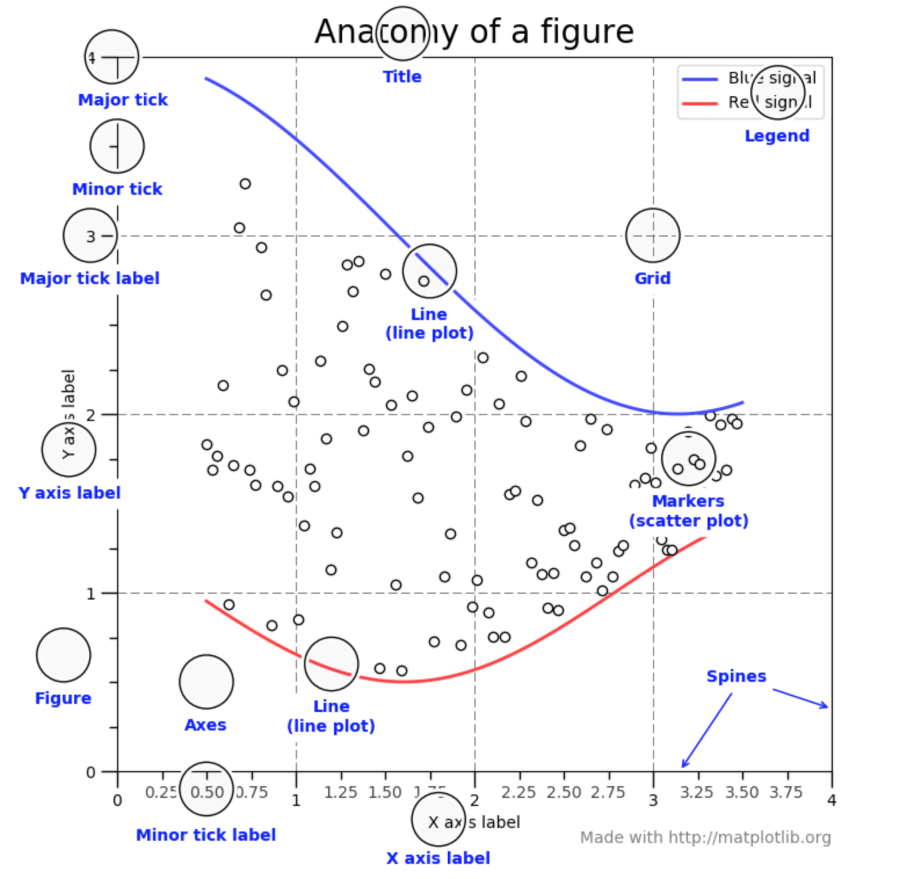
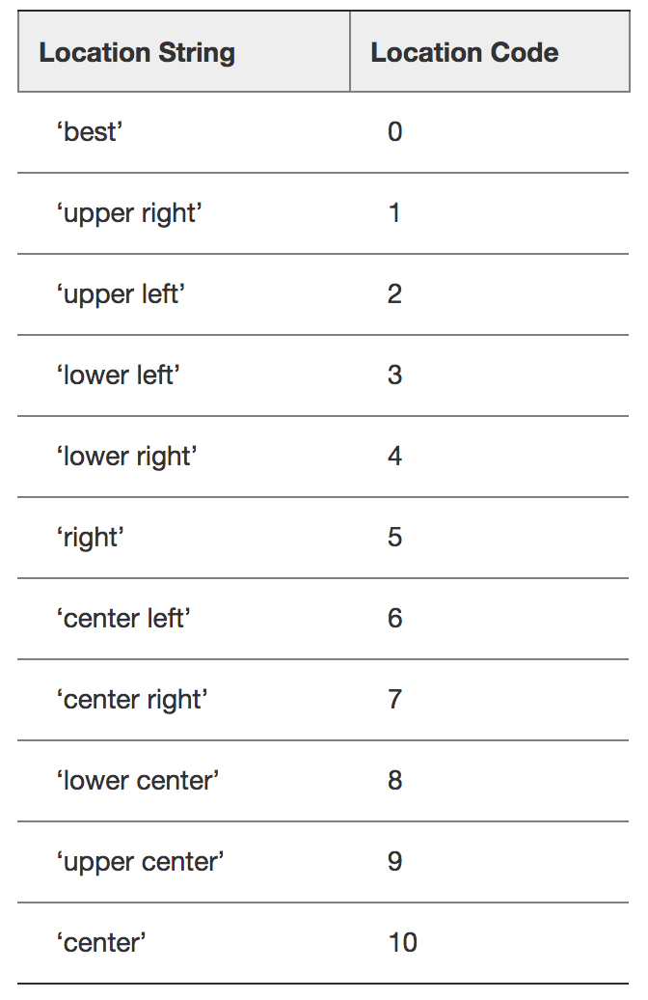
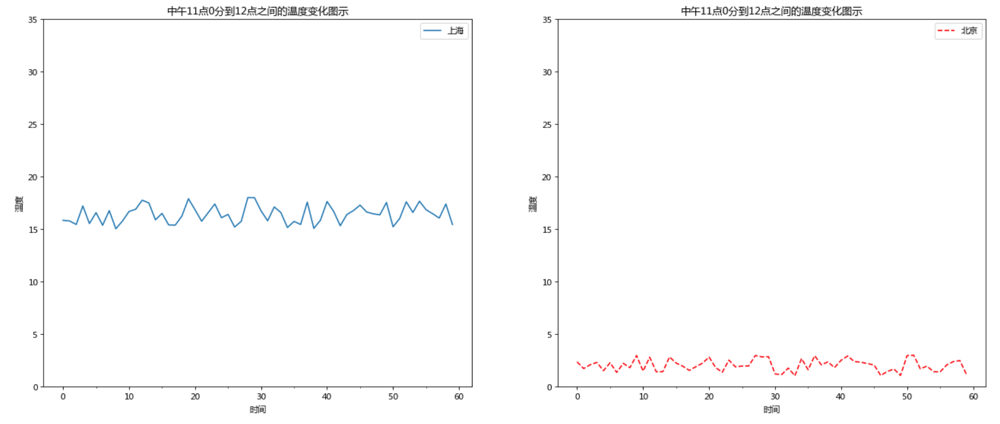

折线图与基础绘图功能
学习目标
- 目标
- 知道如何解决中文显示问题
- 知道matplotlib的图结构
- 应用figure实现创建绘图区域大小
- 应用plot实现折线图的绘制
- 应用title,xlabel,ylabel实现标题以及x,y轴名设置
- 应用xticks,yticks实现axes的刻度设置和标注
- 应用savefig实现图形的本地保存
- 应用grid实现显示网格应用axis实现图像形状修改
- 应用legend实现图形标注信息显示
- 应用plt.subplots实现多坐标系的创建
- 知道如何设置多个axes的标题、刻度
- 知道折线图的应用场景
- 应用
- 天气的温度变化显示
一、Parts of a Figure

二、折线图绘制与保存图片
为了更好的去理解所有基础绘图功能，我们通过天气温度变化的绘图来融合所有的基础API使用
1、matplotlib.pyplot模块
matplotlib.pytplot包含了一系列类似于matlab的画图函数。 它的函数作用于当前图形(figure)的当前坐标系(axes)。
import matplotlib.pyplot as plt
2、折线图绘制与显示
展现上海一周的天气,比如从星期一到星期日的天气温度如下
plt.figure(figsize=(10, 10))
plt.plot([1, 2, 3, 4, 5, 6 ,7], [17,17,18,15,11,11,13])
plt.show()

可以看到这样去显示效果并不好，图形的大小等等，所以我们可以通过加入更多的功能。
3、修改图形大小与图片保存
plt.figure(figsize=(), dpi=)
figsize:指定图的长宽
dpi:图像的清晰度
返回fig对象
plt.savefig(path)
plt.figure(figsize=(20, 8), dpi=80)
plt.savefig("test.png")
会将图片保存到当前路径下
三、温度变化显示
需求：画出某城市11点到12点1小时内每分钟的温度变化折线图，温度范围在15度~18度
效果：

1、构造数据、显示
# 画出温度变化图
# 创建一个figure
plt.figure(figsize=(20, 8), dpi=80)
# 准备x, y坐标的数据
x = range(60)
y_shanghai = [random.uniform(15, 18) for i in x]
# 画折线图
plt.plot(x, y_shanghai, label="上海")
plt.show()

2、自定义x,y刻度以及中文显示
plt.xticks(x, **kwargs)
x:要显示的刻度值
plt.yticks(y, **kwargs)
y:要显示的刻度值
# 增加以下两行代码
# 构造中文列表的字符串
x_ch = ["11点{}分".format(i) for i in x]
y_ticks = range(40)
# 修改x,y坐标的刻度
plt.xticks(x[::5], x_ch[::5])
plt.yticks(y_ticks[::5])

如果没有解决过中文问题的话，会显示这个样子：

2.1 中文显示问题解决
下载中文字体（黑体，看准系统版本）
下载 arial unicode ms 字体到 /home 目录
拷贝字体到 usr/share/fonts 下：
sudo cp ~/arial\ unicode\ ms.ttf /usr/share/fonts/arial\ unicode\ ms.ttf修改配置文件matplotlibrc 并且在~/.matplotlib/matplotlibrc也进行修改
在安装的地方找到虚拟环境ai/lib/python3.6/site-packages/matplotlib/mpl-data目录下面，修改下面三项配置
font.family : sans-serif font.sans-serif : arial unicode ms, Bitstream Vera Sans, Lucida Grande, Verdana, Geneva, Lucid, Arial, Helvetica, Avant Garde, sans-serif删除matplotlib字体缓存：
rm -rf ~/matplotlib/fontList.json
3、增加标题、x轴y轴描述信息
plt.xlabel("时间")
plt.ylabel("温度")
plt.title("中午11点0分到12点之间的温度变化图示")

4、再添加一个城市的温度变化
收集到北京当天温度变化情况，温度在1度到3度。怎么去添加另一个在同一坐标系当中的不同图形，其实很简单只需要再次plot即可，但是需要区分线条，如下显示
# 生成北京的温度
y_beijing = [random.uniform(1, 3) for i in x]
# 画折线图
plt.plot(x, y_shanghai, label="上海")
# 使用plot可以多次画多个折线
plt.plot(x, y_beijing, color='r', linestyle='--', label="北京")
# 添加图形注释
plt.legend(loc="best")
我们仔细观察，用到了两个新的地方，一个是对于不同的折线展示效果，一个是添加注释
4.1自定一个图形风格
| 颜色字符 | 风格字符 |
|---|---|
| r 红色 | - 实线 |
| g 绿色 | - - 虚线 |
| b 蓝色 | -. 点划线 |
| w 白色 | : 点虚线 |
| c 青色 | ' ' 留空、空格 |
| m 洋红 | |
| y 黄色 | |
| k 黑色 |
4.2添加注释
plt.legend(loc="best")

5、多个坐标系显示-plt.subplots
如果我们想要将上海和北京的天气图显示在同一个图的不同坐标系当中，效果如下：

可以通过subplots函数实现(旧的版本中有subplot，使用起来不方便)，推荐subplots函数
matplotlib.pyplot.subplots(nrows=1, ncols=1, **fig_kw) 创建一个带有多个坐标系的图
Parameters: nrows, ncols : int, optional, default: 1, Number of rows/columns of the subplot grid. **fig_kw : All additional keyword arguments are passed to the figure() call. Returns: fig : 图对象 ax : 设置标题等方法不同： set_xticks set_yticks set_xlabel set_ylabel关于axes子坐标系的更多方法：参考https://matplotlib.org/api/axes_api.html#matplotlib.axes.Axes
# 画出温度变化图,展现在不同axes里面
# 创建一个figure
fig, axes = plt.subplots(nrows=1, ncols=2, figsize=(20, 8), dpi=80)
# 准备x, y坐标的数据
x = range(60)
# y的刻度范围
y_ticks = range(40)
y_shanghai = [random.uniform(15, 18) for i in x]
# 生成北京的温度
y_beijing = [random.uniform(1, 3) for i in x]
# 构造中文列表的字符串
x_ch = ["11点{}分".format(i) for i in x]
# 画折线图
axes[0].plot(x, y_shanghai, label="上海")
# 使用plot可以多次画多个折线
axes[1].plot(x, y_beijing, color='r', linestyle='--', label="北京")
# 美化x,y的刻度值
# 第一个参数必须是刻度数字类型，第二个是对应着第一个数字的中文描述
axes[0].set_xticks(x[::5], x_ch[::5])
axes[0].set_yticks(y_ticks[::5])
axes[1].set_xticks(x[::5], x_ch[::5])
axes[1].set_yticks(y_ticks[::5])
# 增加x,y描述信息和标题信息
axes[0].set_xlabel("时间")
axes[0].set_ylabel("温度")
axes[1].set_xlabel("时间")
axes[1].set_ylabel("温度")
axes[0].set_title("中午11点0分到12点之间的温度变化图示")
axes[1].set_title("中午11点0分到12点之间的温度变化图示")
axes[0].legend(loc="best")
axes[1].legend(loc="best")
plt.show()
四、折线图的应用场景
- 呈现公司产品(不同区域)每天活跃用户数
- 呈现app每天下载数量
- 呈现产品新功能上线后,用户点击次数随时间的变化
小结
开头的这几个目标应用全都很重要
- 知道如何解决中文显示问题
- 知道matplotlib的图结构
- 应用figure实现创建绘图区域大小
- 应用plot实现折线图的绘制
- 应用title,xlabel,ylabel实现标题以及x,y轴名设置
- 应用xticks,yticks实现axes的刻度设置和标注
- 应用savefig实现图形的本地保存
- 应用grid实现显示网格应用axis实现图像形状修改
- 应用legend实现图形标注信息显示
- 应用plt.subplots实现多坐标系的创建
- 知道如何设置多个axes的标题、刻度